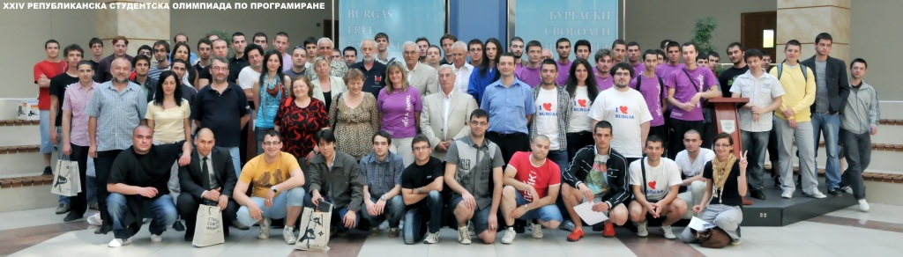

На 12.05.2012 г. в Бургаския свободен университет се проведе 24-тата Републиканска студентска олимпиада по програмиране. Даде се възможност на най-добрите студенти от университети, работещи на територията на Република България и осигуряващи обучение по информатика, да контактуват помежду си и в състезателни условия да проверят качеството на подготовката и възможностите си да се справят с нетривиални програмистки задачи. Паралелно със студентите на олимпиадата участваха и изявени ученици от Бургас и Варна.

РСОП XXIV © БСУ 2012